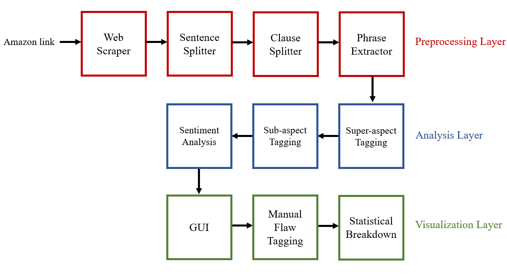
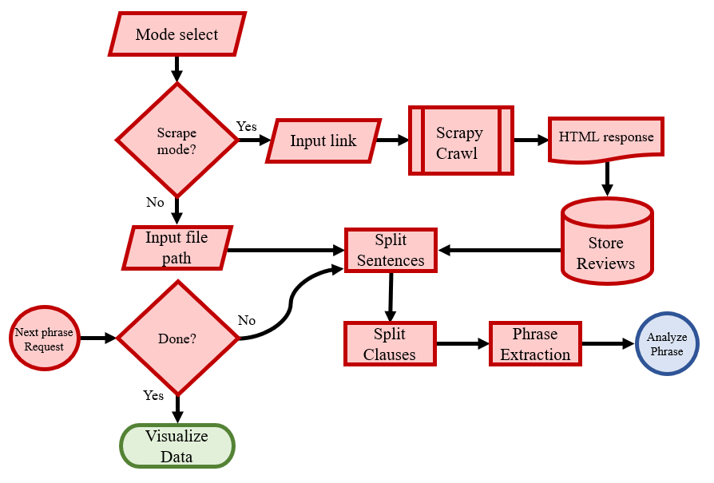
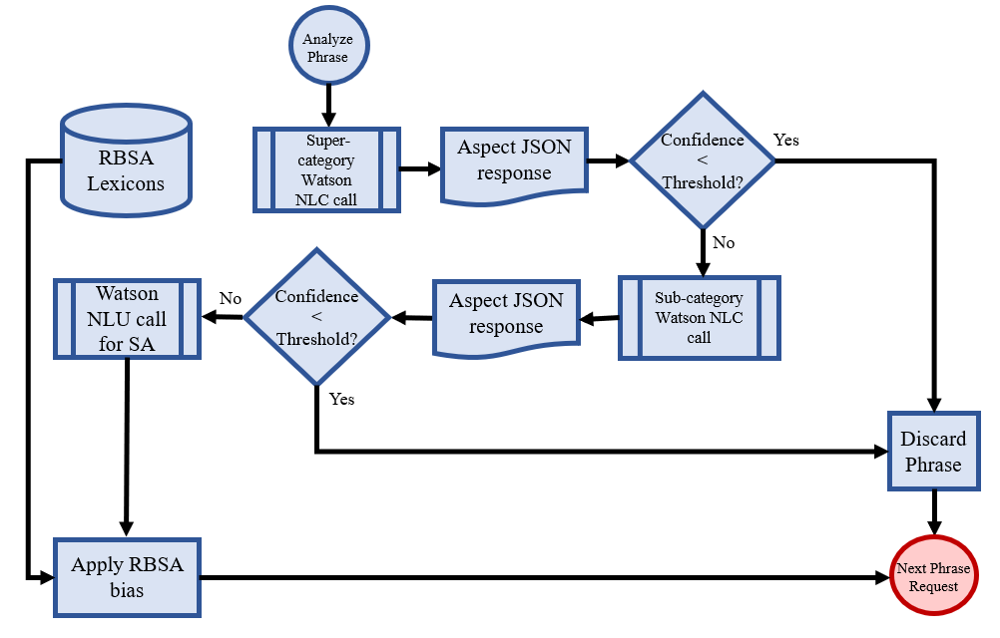
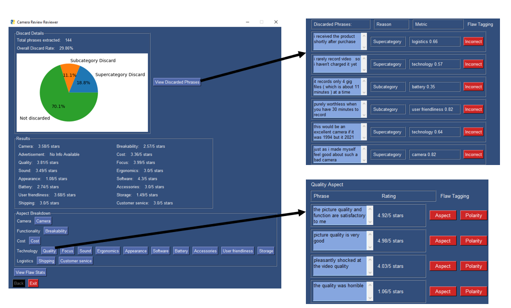

Sentiment Analysis of Product Reviews
- A software system which classifies and visualizes sentiment on the many aspects of cameras, extracted from Amazon reviews
- For example, the user can discover the general opinion on the aspect of "shipping" or "picture quality" using the system
- The system also provides a way for developers to tag the flaws of their modeling, allowing for more accurate aspect-tagging
- The project took 10 months to complete, with three students working on it for senior design
- The project report is linked here: project report
- Briefly, there are three layers: the preprocessing layer, the analysis layer, and the visualization layer:

- The preprocessing layer handles retrieving and manipulating the data to be as palatable as possible for sentiment analysis
- This involves web scraping, sentence splitting, clause splitting, and extracting unique phrases via NLP techniques which observe syntactic relationships between words:

- The analysis layer performs sentiment analysis and aspect-tagging, thereby assigning a polarity to a text as well as categorizing the aspects of a phrase
- Our sentiment analysis takes a hybrid approach: a combination of supervised learning and rule-based learning
- There are two layers of aspect-tagging: super-categorization and sub-categorization. Phrases are discarded based on confidence thresholds of either categorization:

- The visualization layer is the GUI which visualizes various statistics about the model
- This layer also allows developers to manually tag any false outputs, to assess the accuracy of the system

- Our model concluded 93% sentiment analysis accuracy and 96% aspect tagging accuracy